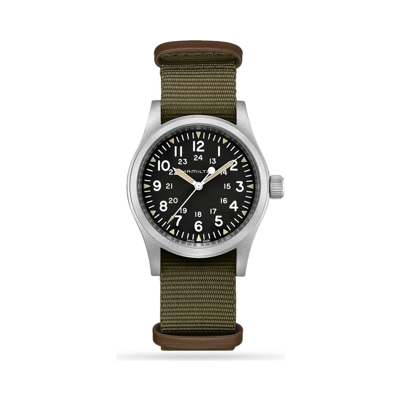

Encyclopedia / Hamilton / Khaki Field Mechanical

Current deal · verified Oct 28, 2026, 9:14 AM ET
$526 Retail $675
Save $149 (22%) · new · WatchMaxx
Ref. H69439931 (38 mm, black dial, NATO strap) · Available (WatchMaxx: limited quantity left at this price)
Brand new from a grey-market dealer; the warranty may be WatchMaxx's rather than Hamilton's. Jomashop had it at $526.50 (Oct 28, 9:16 AM ET). Hamilton sells it direct at $675 and shows it in stock. Prices change fast; check the store before you buy.
Price comparison: fixed-price listings
| Store | Condition | Box & papers | Asking price | Link | Checked |
|---|---|---|---|---|---|
| WatchMaxx | new | Yes* | $526 | View | Oct 28, 2026 |
| Chrono24 marketplace seller | new | Yes | $573 | View | Oct 19, 2026 |
Fixed-price (buy-now) asking prices in USD for ref. H69439931, cheapest new and cheapest pre-owned with box and papers per store, sorted low to high and checked Oct 19, 2026 (ET). Buy-now listings only. Pre-owned listings are shown only when the listing states box and papers. * New from a grey-market dealer: comes boxed, but the warranty card may be the dealer's rather than the brand's. Chrono24 rows are individual third-party marketplace sellers. Prices change fast; confirm with the store.
What it really costs
| Market | Price | Source |
|---|---|---|
| Hamilton US retail | $675 (in stock at Hamilton) | hamiltonwatch.com |
| Grey-market new | $526 WatchMaxx · $526.50 Jomashop | watchmaxx.com / jomashop.com |
| Pre-owned | about $550 – $700 (median ~$600) | Chrono24 |
All prices in USD, checked Oct 19, 2026 (ET). Pre-owned ranges are the middle 80% of asking prices on the first Chrono24 results page for that ref (about 60 listings, used and some unworn), fixed-price listings only. Grey-market = brand-new from a non-authorized dealer.
Buying guide
Key references
| Ref. | What it is | US retail |
|---|---|---|
| H69439931 | 38 mm matt steel, black dial, textile NATO strap, H-50 | $675 |
Which one I'd pick
New vs pre-owned: new at $526 is below the pre-owned median ($600). Buy new.
38 mm vs other sizes: Hamilton also makes 36 and 42 mm versions. The 38 mm is the classic field-watch size.
What to check before you buy
- Hand-wound: there's no rotor, so wind it every couple of days. A 'stopped' watch is usually just unwound.
- Water resistance: 5 bar (50 m). Fine for rain, not for diving.
- Ref check: the field line has many dial colours and sizes. Match H69439931 before comparing prices.
Alternatives worth a look
- Tissot PRX Powermatic 80: A Swiss automatic with an integrated bracelet, under $650. (40 mm stainless steel, Powermatic 80, retail $850 (40 mm))
- Seiko Prospex Alpinist: A field/explorer watch with a compass bezel. (39.5 mm stainless steel, Calibre 6R35, retail $900 (current SPB507, Seiko US))
- Rolex Explorer (36 mm): Where the simple tool watch tops out. (36 mm Oystersteel, Calibre 3230, retail $7,900 (124270))
History
Hamilton was founded in 1892 in Lancaster, Pennsylvania; it's now based in Bienne, Switzerland.
During World War II Hamilton stopped making consumer watches and shipped its production to the military; Hamilton says it supplied more than one million watches. The black-dial field watch look was later shaped by US military specifications of the Vietnam era.
Hamilton describes today's Khaki Field Mechanical as a faithful recreation of its 1960s forebear. The 38 mm H69439931 uses the hand-wound H-50 with up to 80 hours of power reserve.
Hamilton says the Khaki Field Mechanical 38 mm was featured in Sonic the Hedgehog (2020), worn by Sheriff Tom Wachowski, played by James Marsden.
Specifications
| Brand | Hamilton |
|---|---|
| Model | Khaki Field Mechanical |
| Key references | H69439931 |
| Launch year | Not confirmed |
| Case | 38 mm stainless steel |
| Thickness | 9.5 mm |
| Lug-to-lug | 47 mm |
| Lug width | 20 mm |
| Crystal | Sapphire |
| Balance spring | Nivachron |
| Movement | Calibre H-50, manual-wind |
| Power reserve | 80 hours |
| Water resistance | 50 m |
| Approx. US retail (Oct 2026) | $675 (38 mm) |
Specs from the brand's official product page for the main reference. Retail prices are list prices, not market value, and change often.
Highlights
- Hand-wound movement
- Military-style 24-hour dial
- Matte steel case
FAQ
How much is a Hamilton Khaki Field Mechanical?
Hamilton's US site lists the 38 mm H69439931 at $675 (checked Oct 19, 2026). It was $526 new at WatchMaxx (Oct 28, 2026).
Is the Khaki Field Mechanical automatic?
No. It's hand-wound, with Hamilton's H-50 calibre and up to 80 hours of power reserve.
Does it have a sapphire crystal?
Yes, per Hamilton.
Was Hamilton a military watch supplier?
Yes. During World War II Hamilton stopped consumer production and supplied watches to the military.
Want this watch for less?
Every week I hunt down genuine deals on watches like the Khaki Field Mechanical and send the best ones. Free, one email a week.
Get the free weekly issuePrices and availability last checked Oct 28, 2026. No affiliate links: I don't earn anything if you buy. Sources are listed in our research notes and linked above.